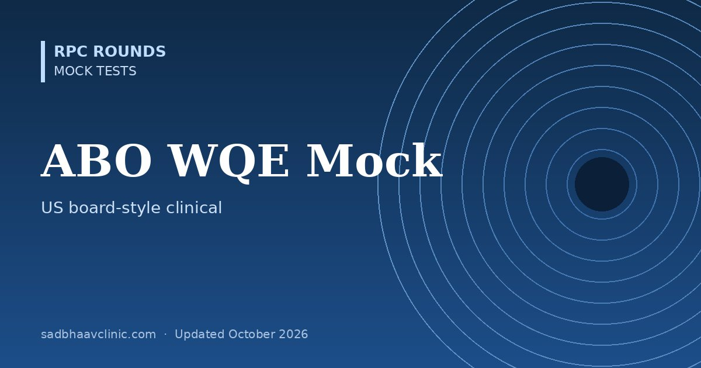

ABO Written Qualifying Exam (WQE) Style Mock Test: 50 MCQs
Last updated: October 2026
A timed 50-question mock in the style of the American Board of Ophthalmology Written Qualifying Examination and the OKAP: practice-based clinical questions using US practice patterns and landmark trials.
- The real exam: the WQE is a computer-based test of about five hours (including tutorial and break) at testing centres in the US, taken after an accredited US residency; passing it leads to the oral examination.
- This mock: 50 single-best-answer questions across glaucoma, retina, neuro-ophthalmology, cornea, refractive surgery, lens, uveitis, paediatrics, oculoplastics, systemic disease and practice management.
- Pair it with our OKAP mock, which covers all 13 BCSC sections.
Planning to work or train abroad? Read our guide to ophthalmology exams abroad for formats, eligibility and official links.


Want thousands more practice questions?
OKAT Decoded covers the same core ophthalmology curriculum in 10,200 original MCQs, every answer explained, with 18 full-length mock tests.
All questions are original and written for practice. They are not taken from any past paper, and this test is not affiliated with or endorsed by the examining body. Exam formats change: confirm details on the official website.
📘 Want more exam-ready material? See Most Commons in Ophthalmology on Kindle, or browse all my books.
Looking for an eye specialist in Ahmedabad? Learn about our Eye Department or book a consultation with Dr. Dhaval Patel.